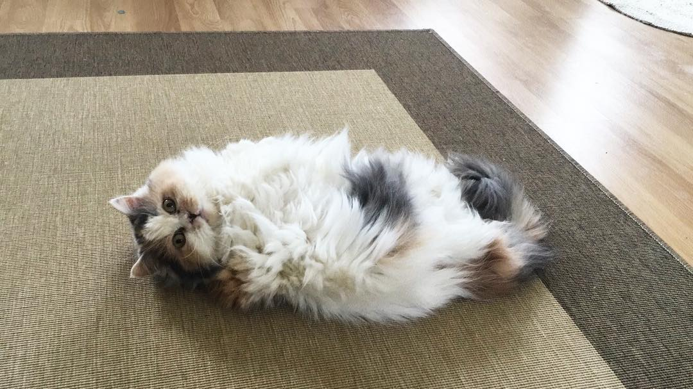

Lab 1: Home Page
In this lab we created a home page and lab page for our lab 1.I chose a cat theme for my website that included a light blue, content, titleNav, and footer. I also created a box shadow for the titleNav that has the color grey. Both images on the home and lab page are in jpg form. The nav link for both Home and Lab turns red when you hover over it. The titleNav and footer are fixed position because we wanted to take it out of its normal flow and keep it at the top-left with respect to its edges. Overall I think this lab really helped me understand better about creating a dynamic and very fluid looking web page.
Lab 2: Responsive Design
In this lab, I created a single page design that has three pages, which were, the introductions, content, and the form. I styled each page with different colors of background-gradient. I also included a video in the introduction, as well as links to other websites related to the subject that I chose. The easiest part of the project I thought was styling the each pages. The difficult think I found while completing this project was creating a collapsible nav bar. 02_advLayout/index.html
Lab 3-4: JavaScript
In this lab, I created a couple of divs, one where superman is flying over a cartoon farm. Some of the buttons that I created let user move the div superman back and forth and also change the background Image to a gif of a city. The script for this particular project was a bit tedious and getting the gif to the ideal size was also a challenge 03_jsIntro/index.html
Lab 5: Database
In this lab, I created a database that have two tables where one is called cat, and the other is called catdata. The cat table has information about the people who works/members in the cat cafe and the catdata holds information about the cats that are in the cafe. DATABASE CLICK HERE
Lab 6: Web API
In this lab, I created a web API for the cat information for the catdata database.
webApi.jsp
testApiDomJs.html
testApiDomJq.html
Tutorial: Enhanced Thumbnail Framework
In this tutorial, I wrote a JavaScript Framework that created a thumbnail in which
the five original characters from the mighty morphin powerangers.
Tutorial.html
Triple Lab Part 1
In this Lab I created the first part of the angular project. I used some of the examples from the previous WebAPI lab to complete this project cat_list.html cat_insert_update.html person_list.html person_insert_update.html
Triple Lab Part 2
In this lab, I learned more about implementing CRUD by implementing the update, view, and delete functionality cat_list.html cat_detail.html
Triple Lab Part 3
For this lab, I learned how to implement logon and logoff features into my webpage. logon.html logoff.html cat_list.html